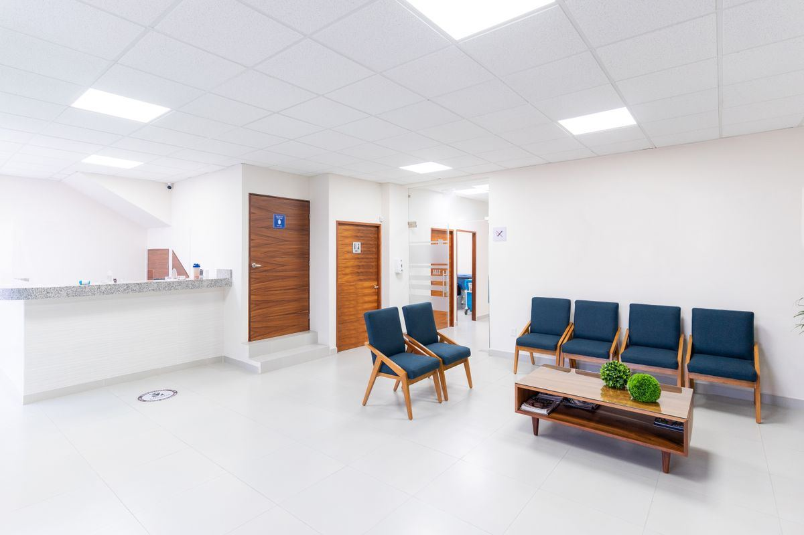
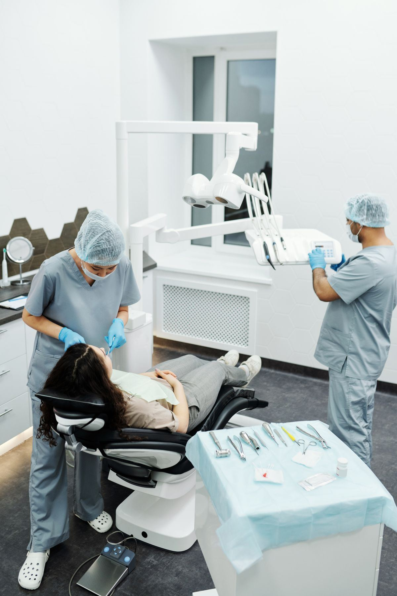

Klinik Sehat Sentosa melayani poli umum, gigi, dan kesehatan ibu-anak dengan sistem booking WhatsApp — datang sesuai jam janji, langsung masuk ruang periksa. Harga transparan, obat tersedia di apotek internal.
Dari batuk pilek sampai perawatan gigi dan kehamilan — semua di satu tempat, dengan rujukan cepat bila dibutuhkan.
Pemeriksaan keluhan umum dewasa & anak, surat keterangan sehat, surat izin sakit, dan konsultasi kesehatan kerja.
Tambal, cabut, scaling karang gigi, dan perawatan gigi anak. Alat steril sekali pakai untuk jarum & sarung tangan.
Pemeriksaan kehamilan, USG dasar, imunisasi bayi sesuai jadwal Kemenkes, KB, dan kelas ibu hamil setiap bulan.
Cek gula darah, kolesterol, asam urat, hemoglobin, dan tes kehamilan — hasil keluar di kunjungan yang sama.
Khitan metode modern minim nyeri untuk anak, dikerjakan dokter berpengalaman dengan paket obat & kontrol.
Obat resep langsung ditebus di klinik — tidak perlu keliling mencari apotek. Tersedia juga vitamin & obat bebas umum.
Jadwal dapat berubah saat dokter berhalangan — admin akan mengonfirmasi ulang setiap booking yang masuk.
| Dokter | Layanan | Hari Praktik | Jam |
|---|---|---|---|
| dr. Maya Kusuma | Poli Umum | Senin – Jumat | 07.00 – 14.00 |
| dr. Fajar Nugroho | Poli Umum | Senin – Sabtu | 14.00 – 21.00 |
| drg. Larasati Putri | Poli Gigi | Selasa, Kamis, Sabtu | 09.00 – 15.00 |
| drg. Bimo Aditama | Poli Gigi | Senin, Rabu, Jumat | 16.00 – 21.00 |
| Bd. Sari Wulandari | KIA & Imunisasi | Setiap Hari | 08.00 – 16.00 |
Pelayanan kesehatan yang baik terasa dari hal-hal kecil yang konsisten.
Pasien booking diprioritaskan sesuai jam janji. Rata-rata masuk ruang periksa dalam 10 menit sejak tiba.
Melayani peserta BPJS Kesehatan (faskes tingkat pertama) dan pasien umum dengan rincian biaya sebelum tindakan.
Alat medis disterilisasi autoclave setiap pakai. Izin operasional klinik pratama dari Dinas Kesehatan setempat.
Riwayat berobatmu tercatat rapi — kunjungan berikutnya dokter langsung tahu riwayat alergi & pengobatanmu.
Booking H-1 sangat dianjurkan. Untuk keadaan darurat, datang langsung — pasien gawat selalu kami dahulukan.
Sekilas suasana Klinik Sehat Sentosa.


Testimoni pasien Klinik Sehat Sentosa.
"Booking lewat WA itu game changer. Datang jam 4, jam 4.10 sudah diperiksa. Nggak ada lagi antre dari subuh."
"Dokter giginya sabar banget sama anak saya yang takut jarum. Scaling juga nggak sakit dan dijelaskan dulu biayanya."
"Kontrol hamil selalu di sini karena bidannya detail dan enak diajak konsultasi. Buku KIA terisi rapi tiap kunjungan."
Informasi praktis sebelum berkunjung.
Ya, kami adalah faskes tingkat pertama mitra BPJS Kesehatan. Bawa kartu BPJS/KIS dan KTP saat kunjungan pertama agar terdaftar di sistem kami.
Bisa langsung datang (walk-in) mengikuti antrean yang ada. Namun kami sangat menyarankan booking via WhatsApp agar waktu tunggumu jauh lebih singkat.
Klinik buka setiap hari termasuk Minggu pukul 07.00–21.00. Jadwal dokter di hari libur nasional menyesuaikan — admin akan memberi tahu saat kamu booking.
Bisa. Pemeriksaan surat sehat mencakup tensi, tinggi/berat, visus mata dasar, dan pemeriksaan fisik umum. Hasil keluar di hari yang sama.
Kami di Jl. Kesehatan No. 21, Sukoharjo — halaman parkir motor & mobil tersedia gratis di depan klinik, dengan petugas parkir pada jam sibuk.